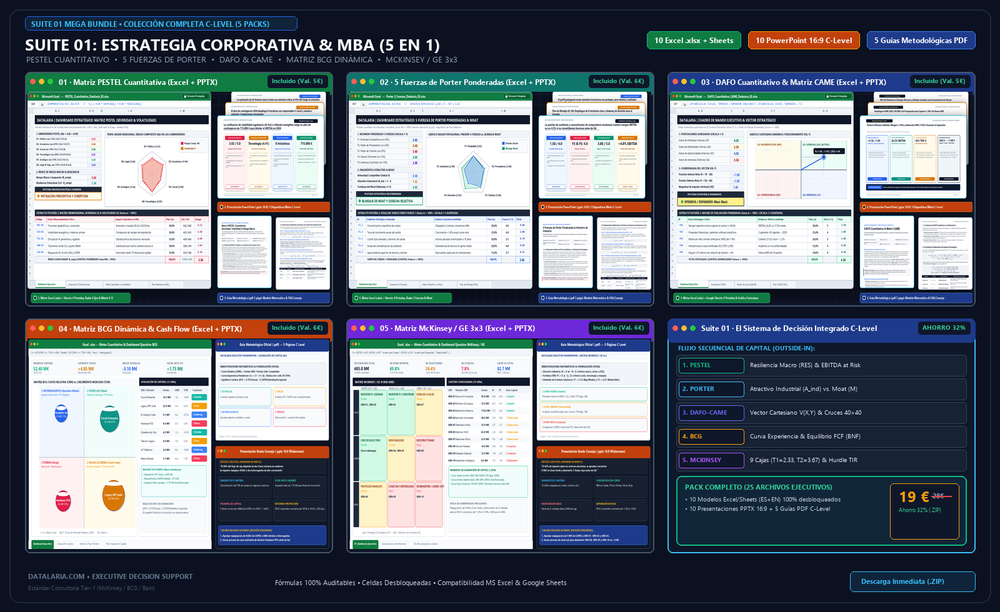

En la inmensa mayoría de las grandes corporaciones, la sesión anual de planificación estratégica sigue un guion tan predecible como ineficaz: semanas de trabajo de consultores y equipos internos culminan en presentaciones de más de cien diapositivas repletas de adjetivos abstractos, listas de viñetas homogéneas y diagramas conceptuales sin ponderar. Se debate sobre “entornos volátiles”, “marcas consolidadas” o “competencia agresiva”, pero cuando el Consejero Delegado (CEO) o el Director Financiero (CFO) preguntan cuánto capital en inversión (CAPEX) debe comprometerse en el presupuesto del ejercicio entrante y qué rentabilidad económica sobre el capital invertido (ROIC) blindará a la firma frente a turbulencias externas, la sala enmudece.
La formulación estratégica contemporánea sufre una brecha estructural: la desconexión absoluta entre el diagnóstico cualitativo y el motor financiero de asignación de recursos. Cuando los marcos analíticos no se interconectan matemáticamente, las decisiones de capital terminan tomándose por inercia presupuestaria, política interna o la elocuencia retórica del directivo de mayor rango jerárquico (HiPPO: Highest Paid Person’s Opinion).
En esta guía metodológica maestra de estándar Tier-1 (McKinsey / BCG / Bain), desmantelamos esta patología y presentamos el Framework Sistémico de 5 Fases de Datalaria: una arquitectura analítica Outside-In (de afuera hacia adentro) donde la salida matemática de cada herramienta alimenta estocásticamente la entrada de la siguiente, transformando la incertidumbre macroeconómica en decisiones presupuestarias y mandatos de gobernanza listos para ser votados por un Consejo de Administración.
PESTEL Cuantitativo
Severidad vs. Volatilidad"] PO["Fase 2: Industria
5 Fuerzas de Porter
Atractivo & Moat"] SW["Fase 3: Diagnóstico Interno
DAFO-CAME Vectorial
Postura Cartesiana"] BC["Fase 4: Cartera & Caja
BCG Dinámica
Balance de Free Cash Flow"] MC["Fase 5: Asignación Capital
McKinsey / GE 3x3
Optimización de CAPEX"] P -->|Volatilidad modula fuerzas| PO PO -->|Intensidad define amenazas/nichos| SW SW -->|Fuerza interna calibra ventajas| MC BC -->|Excedentes de Vacas financian CAPEX| MC MC -->|Decision Gateway vinculante| BD["Consejo de Administración
Asignación Presupuestaria
ROIC > WACC & Covenants"] style P fill:#FEF2F2,stroke:#EF4444,stroke-width:2px,color:#991B1B style PO fill:#FFFBEB,stroke:#F59E0B,stroke-width:2px,color:#92400E style SW fill:#ECFDF5,stroke:#10B981,stroke-width:2px,color:#065F46 style BC fill:#EFF6FF,stroke:#3B82F6,stroke-width:2px,color:#1E40AF style MC fill:#FAF5FF,stroke:#A855F7,stroke-width:2px,color:#6B21A8 style BD fill:#0F172A,stroke:#38BDF8,stroke-width:2px,color:#FFFFFF
🔍 Haz clic en el diagrama para ampliarlo a pantalla completa
Mega Bundle: Suite 01 · Estrategia Corporativa & MBA (5 Packs C-Level)
1. La Patología de la Estrategia Cualitativa y la Última Milla Ejecutiva
1.1. La Trampa de los Decks Estratégicos Tradicionales
Durante más de medio siglo, las escuelas de negocios han transmitido marcos como PESTEL, Porter, DAFO, BCG y McKinsey como asignaturas o módulos independientes. En la práctica empresarial, esta fragmentación genera lo que en la consultoría estratégica de alta dirección denominamos el “Síndrome de los Silos Analíticos”:
- La Falacia de la Simetría Tipográfica: En un DAFO o PESTEL clásico, una amenaza regulatoria existencial (como una multa de hasta el 7% de la facturación global o la pérdida de la licencia de operación por normativas de emisiones) se redacta con el mismo tamaño tipográfico, el mismo peso visual y la misma dedicación en el orden del día que un retraso menor en los trámites burocráticos de licencias municipales. Al carecer de una escala matemática de severidad y probabilidad, el comité debate ambas cuestiones con idéntica intensidad.
- La Ausencia de Elasticidades Cruzadas: Los factores del entorno externo no ejercen una presión estática sobre las cuentas anuales. Un incremento del 20% en las tasas de interés no afecta a todas las divisiones por igual: destruye la demanda de bienes de equipo financiados a largo plazo mientras deja casi inalterados los ingresos recurrentes por software de misión crítica. Los modelos descriptivos ignoran la función de elasticidad que conecta el choque macro con el margen de contribución.
- El Vacío de la Última Milla Ejecutiva (The Executive Last Mile): La última milla ejecutiva establece que cualquier análisis estratégico, por sofisticado o brillante que resulte en su conceptualización, fracasa si no desemboca en un algoritmo reproducible, una partida presupuestaria auditable y un Decision Gateway listo para la votación del Consejo. Un documento que concluye que “el entorno es retador y debemos consolidar el liderazgo en calidad” es un ejercicio de retórica que no orienta la asignación de un solo euro.
1.2. De la Opinión Subjetiva al Algoritmo de Asignación de Recursos
En un Consejo de Administración, el capital es el recurso más escaso y exigente. Cada euro asignado a una división para financiar una planta industrial o un desarrollo tecnológico es un euro que se sustrae de la retribución al accionista vía dividendos o del fortalecimiento de la estructura de balance frente a contingencias de crédito.
Para blindar la gobernanza corporativa, la estrategia debe evolucionar desde la oratoria persuasiva hacia la formulación econométrica. Cada herramienta analítica de la Suite 01 ha sido reingenierizada por Datalaria para dotarla de rigor matemático: transformamos inventarios en vectores en $\mathbb{R}^n$, listas de fortalezas en coordenadas cartesianas, cuadrantes cualitativos en superficies de optimización de capital y balances de cartera en ecuaciones de equilibrio estocástico de flujos de caja libre.
2. El Framework Sistémico de 5 Fases: Arquitectura Outside-In
El orden en el que se ejecuta el análisis corporativo determina la solidez de sus conclusiones. Tratar de formular una estrategia de cartera (BCG) o de asignar inversiones (McKinsey) sin haber cuantificado previamente la hostilidad de la industria (Porter) y las tendencias macroambientales (PESTEL) equivale a navegar en aguas turbulentas sin instrumentación náutica.
El modelo de Datalaria sigue una secuencia rigurosa Outside-In (de afuera hacia adentro):
- Fase 1 (Frontera Macro): Escaneo estocástico del entorno político, económico, social, tecnológico, ecológico y legal mediante la Matriz PESTEL Cuantitativa, determinando el riesgo compuesto, la resiliencia macro estructural y la volatilidad temporal.
- Fase 2 (Estructura Sectorial): Evaluación de la atracción intrínseca de los mercados donde compite la corporación mediante las 5 Fuerzas de Porter Ponderadas, midiendo el atractivo estructural de industria ($A_{\text{ind}}$), el foso defensivo interno (Economic Moat $M$) y la intensidad de la rivalidad.
- Fase 3 (Capacidades Internas y Postura Táctica): Mapeo vectorial de la organización mediante el DAFO Cuantitativo y la Matriz CAME, resolviendo el vector cartesiano de postura corporativa $\vec{V}(X,Y)$ (Ofensiva, Defensiva, Reorientación o Supervivencia) y su matriz de cruce 40×40.
- Fase 4 (Dinámica de Liquidez y Cartera): Modelización de la solvencia orgánica, la curva de experiencia y el flujo de fondos entre unidades mediante la Matriz BCG Dinámica, verificando que las divisiones maduras aporten la liquidez necesaria para financiar las apuestas de crecimiento ($\text{BNF} \ge 0$).
- Fase 5 (Asignación Multicriterio de Capital y Creación de Valor): Síntesis estratégica global mediante la Matriz McKinsey / GE 3x3, categorizando las unidades de negocio en 9 cajas continuas ($T_1 = 2.33, T_2 = 3.67$) y tres zonas de capital (Invertir, Seleccionar, Cosechar) para maximizar el diferencial entre ROIC y coste de capital (WACC).
Cuadro Sinóptico Ejecutivo: Las 5 Fases del Sistema Datalaria
| Fase | Marco Analítico | Variable Matemática Clave | Pregunta que Responde ante el Board | Entregable Decisivo |
|---|---|---|---|---|
| 1. Macro | PESTEL Cuantitativo | $R_{\text{comp}} = \sum W_d \sum w_{d,i} \sqrt{S_{d,i} \cdot V_{d,i}}$ y $RES_{\text{macro}} = 5.0 - R_{\text{comp}}$ | ¿Qué volumen de EBITDA está expuesto a shocks geopolíticos y regulatorios? | Mapa de Incertidumbre 2×2 & Reserva Presupuestaria de Contingencia |
| 2. Industria | 5 Fuerzas de Porter Ponderadas | $A_{\text{ind}} = 5.0 - \sum W_k F_k$ vs. Foso Interno $M \in [1.0, 5.0]$ | ¿La estructura del sector permite retener rentas económicas o se evaporan en rivalidad? | Radar Pentagonal & Matriz Bidimensional ($A_{\text{ind}}$ vs. $M$) |
| 3. Interno | DAFO Cuantitativo & CAME | $\vec{V}(X,Y) = \left( S_F - S_D, \; S_O - S_A \right) \in [-4, +4]^2$ | ¿Cuál es la postura táctica dominante de la empresa y qué acciones neutralizan debilidades? | Vector Cartesiano en $\mathbb{R}^2$ & Matriz CAME 40×40 con KPIs |
| 4. Cartera | Matriz BCG Dinámica | $\text{BNF} = \Delta \text{FCF}_{\text{cartera}} = \sum \text{FCF}_{\text{Vacas}} - \sum \text{CAPEX}_{\text{Crecimiento}}$ | ¿La cartera de productos es financieramente autosuficiente o requiere apalancamiento? | Diagrama de Burbujas Logarítmico & Balance de Autofinanciación FCF |
| 5. Asignación | Matriz McKinsey / GE 3x3 | $I_A \times F_C \in [1.0, 5.0]^2$ con umbrales $T_1=2.33, T_2=3.67$ | ¿Dónde debe asignarse exactamente cada millón de euros de CAPEX disponible? | Matriz 3×3 de 9 Cuadrantes & Board Decision Gateway Vinculante |
3. Desglose Metodológico de las 5 Herramientas
A continuación, analizamos en profundidad cada una de las herramientas de la suite, demostrando su formulación analítica, el formato visual exigido por la alta dirección y los puntos de contacto matemáticos que aseguran la continuidad del sistema.
🌐 Herramienta 1: Matriz PESTEL Cuantitativa (Severidad, Volatilidad & Incertidumbre Macro)
3.1. Fundamento Cuantitativo: Superando el Inventario Descriptivo
El análisis PESTEL clásico fue formalizado originalmente a finales de los años sesenta (Aguilar, 1967) como una taxonomía descriptiva. Sin embargo, en un entorno caracterizado por disrupciones tecnológicas aceleradas, fragmentación geopolítica y crisis energéticas, tratar los factores macroeconómicos como una lista estática induce a errores letales de planificación.
El modelo Datalaria descompone la evaluación macro de los 30 factores canónicos (5 por cada dimensión: Política, Económica, Social, Tecnológica, Ecológica y Legal) en un espacio métrico bidimensional:
- Severidad del Impacto Financiero en P&L ($S_{d,i} \in [1.0, 5.0]$): Cuantifica el daño potencial o beneficio económico sobre el margen EBITDA si el factor se materializa plenamente.
- Volatilidad Temporal / Velocidad de Choque ($V_{d,i} \in [1.0, 5.0]$): Mide la rapidez estocástica con la que el evento impacta en la organización y el tiempo disponible de reacción (desde shocks inmediatos a tendencias estructurales a diez años vista).
Adicionalmente, se introduce la ponderación macrosectorial asimétrica ($W_d$), que reconoce que para una empresa farmacéutica la dimensión Legal ($W_L$) puede concentrar el 35% del riesgo global, mientras que para un operador logístico o siderúrgico la dimensión Económica ($W_E$) y Ecológica ($W_{Ec}$) representan la mayor parte de la exposición.
3.2. Fórmulas y Lógica Matemática Clave
El riesgo individual de cada factor se modela mediante su media geométrica ponderada para penalizar factores donde confluyen simultáneamente una severidad catastrófica y una volatilidad extrema:
$$R_{d,i} = \sqrt{S_{d,i} \cdot V_{d,i}} \in [1.00, 5.00]$$El Índice de Riesgo Macro Compuesto ($R_{\text{comp}}$) y el Índice de Resiliencia Macro Estructural ($RES_{\text{macro}}$) de la organización se obtienen agregando los factores normalizados a través de las seis dimensiones canónicas:
$$R_{\text{comp}} = \sum_{d=1}^6 W_d \left( \sum_{i=1}^{n_d} w_{d,i} \cdot R_{d,i} \right) \in [1.00, 5.00], \qquad RES_{\text{macro}} = 5.00 - R_{\text{comp}} \in [0.00, 4.00]$$A partir de este índice, el equipo de planificación calcula el EBITDA en Riesgo ($\text{EaR}$) para someter el plan presupuestario a pruebas de estrés financiero:
$$\text{EaR} = \text{EBITDA}_{\text{base}} \times \left( \frac{R_{\text{comp}} - 1.0}{4.0} \right) \times \beta_{\text{macro}}$$Donde $\beta_{\text{macro}}$ representa el coeficiente de sensibilidad operativa de la compañía ante oscilaciones del ciclo macroeconómico.
Los factores se proyectan en una Matriz Cartesiana de Incertidumbre de Cuatro Cuadrantes:
- Q1: Críticos Volátiles ($S \ge 3.0, V \ge 3.0$): Factores de alto impacto y aparición súbita. Exigen contratos de cobertura financiera inmediata (hedging), planes de redundancia de suministro y asignación de fondos de contingencia en OPEX.
- Q2: Estructurales Graduales ($S \ge 3.0, V < 3.0$): Tendencias de transformación profunda (cambio demográfico, directivas comunitarias CSRD). Requieren programas plurianuales de reconversión de CAPEX y rediseño de procesos.
- Q3: Alertas Tempranas ($S < 3.0, V \ge 3.0$): Ruido de mercado volátil pero de bajo impacto financiero. Vigilancia pasiva con indicadores de alerta temprana (Early Warning Indicators).
- Q4: Ruido Marginal ($S < 3.0, V < 3.0$): Factores no materiales que deben eliminarse de las agendas del Consejo para no dispersar el foco directivo.
3.3. Qué ve el Comité de Dirección
El entregable de gobernanza se estructura bajo la Pirámide de Minto:
- Un Action Title contundente que resume la exposición financiera ("El 62% del EBITDA en riesgo se concentra en shocks energéticos y regulatorios de Q1, justificando una reserva de contingencia de 3.2 M€").
- Un Gráfico Radar Hexagonal que contrasta el perfil de riesgo compuesto frente a la volatilidad de las 6 dimensiones.
- Un mapa de dispersión cartesiana $S \times V$ situando los factores críticos y asignando a cada uno un Owner estatutario C-Level y un umbral cuantitativo de activación presupuestaria (trigger).
Executive Decision Pack: Matriz PESTEL Cuantitativa
🛡️ Herramienta 2: 5 Fuerzas de Porter Ponderadas (Atractivo Industrial & Economic Moat)
3.4. Fundamento Cuantitativo: El Atractivo Sectorial como Ancla del ROIC
La investigación clásica de Michael Porter (1979, 1985) demostró que las características estructurales del sector determinan la tasa media de rentabilidad del capital a largo plazo con mayor fuerza que la propia eficiencia operativa interna de las firmas. No obstante, las presentaciones corporativas habituales degradan el marco asignando calificaciones arbitrarias de “alto, medio o bajo” sin ponderar la relevancia específica de cada fuerza.
En el modelo Datalaria, cada una de las 5 fuerzas canónicas (Rivalidad entre Competidores, Poder de Proveedores, Poder de Clientes, Amenaza de Nuevos Entrantes y Amenaza de Sustitutos) se audita mediante 25 subcriterios paramétricos (5 por fuerza) evaluados en escala continua de 1.0 a 5.0, vinculados a ratios financieros reales como márgenes brutos, concentración sectorial (Índice Herfindahl-Hirschman) y costes de cambio del cliente (Switching Costs).
3.5. Fórmulas y Lógica Matemática Clave
Se asigna una ponderación asimétrica a cada una de las 5 fuerzas ($W_k$), donde $\sum_{k=1}^5 W_k = 1.00$. La Intensidad Competitiva Compuesta ($I_{\text{comp}}$) se calcula como:
$$I_{\text{comp}} = \sum_{k=1}^5 W_k \left( \sum_{j=1}^{5} \alpha_{k,j} \cdot S_{k,j} \right) \in [1.00, 5.00]$$Dado que un sector con una intensidad competitiva máxima ($I_{\text{comp}} \rightarrow 5.0$) destruye sistemáticamente el valor económico del capital al forzar una guerra de precios o transferir rentas a proveedores monopolísticos, el Índice de Atractivo Estructural de Industria ($A_{\text{ind}}$) se define matemáticamente como la distancia complementaria en el rango $[0.00, 4.00]$:
$$A_{\text{ind}} = 5.00 - I_{\text{comp}} \in [0.00, 4.00]$$En paralelo, se audita el Índice de Foso Defensivo Interno (Economic Moat, $M \in [1.00, 5.00]$) sobre 5 dimensiones de ventaja competitiva (activos intangibles, costes de cambio, efecto red, ventaja en costes y escala eficiente):
$$M = \sum_{r=1}^5 \beta_r \cdot M_r \in [1.00, 5.00] \quad \implies \quad \text{Moat Spread} = \text{ROIC}_{\text{UEN}} - \text{WACC}_{\text{corporativo}}$$El cruce bidimensional entre Atractivo Industrial ($A_{\text{ind}}$) y Foso Defensivo ($M$) define cuatro posturas estratégicas: Expansión y Dominio ($A_{\text{ind}} \ge 2.20, M \ge 3.00$), Blindaje del Moat y Cosecha Selectiva ($A_{\text{ind}} < 2.20, M \ge 3.00$), Construcción Selectiva de Barreras ($A_{\text{ind}} \ge 2.20, M < 3.00$) y Desinversión / Salida Ordenada ($A_{\text{ind}} < 2.20, M < 3.00$).
3.6. Qué ve el Comité de Dirección
El Consejo evalúa un Gráfico Radar Pentagonal que superpone la huella de intensidad competitiva de las 5 fuerzas frente al blindaje del foso defensivo de la compañía. La diapositiva se complementa con la matriz bidimensional Atractivo del Mercado ($A_{\text{ind}}$) vs. Fortaleza del Foso Defensivo ($M$) y el plan de blindaje con su impacto cuantificado en puntos básicos de margen EBITDA.
Executive Decision Pack: 5 Fuerzas de Porter & Moat
🎯 Herramienta 3: DAFO Cuantitativo & Matriz CAME (Espacio Vectorial & Postura Táctica)
3.7. Fundamento Cuantitativo: El Fin del “Post-it Estratégico”
El análisis DAFO (SWOT) tradicional suele ser el ejercicio más deteriorado de la planificación corporativa: decenas de notas adhesivas pegadas en una pizarra sin jerarquía matemática, sin evidencia empírica auditable y sin conexión alguna con las iniciativas presupuestarias.
La metodología Datalaria sustituye este enfoque intuitivo por un modelo en el espacio vectorial $\mathbb{R}^2$. Los factores internos (Fortalezas $S_F$ y Debilidades $S_D$) y externos (Oportunidades $S_O$ y Amenazas $S_A$) se normalizan mediante vectores de pesos relativos ($\sum w_i = 1.00$) y puntuaciones cuantitativas auditadas por control de gestión en escala $[1.00, 5.00]$.
3.8. Fórmulas y Lógica Matemática Clave
Las coordenadas del Vector de Postura Estratégica Corporativa $\vec{V} = (X, Y) \in [-4.00, +4.00]^2$ se calculan mediante el balance neto entre índices internos y externos:
$$X = S_F - S_D = \sum_{i=1}^{n_f} w_{f,i} \cdot F_i - \sum_{j=1}^{n_d} w_{d,j} \cdot D_j \in [-4.00, +4.00]$$$$Y = S_O - S_A = \sum_{k=1}^{n_o} w_{o,k} \cdot O_k - \sum_{l=1}^{n_a} w_{a,l} \cdot A_l \in [-4.00, +4.00]$$El plano cartesiano resultante se divide en cuatro cuadrantes normativos que dictan la orientación de los recursos corporativos:
- Cuadrante I: Postura Ofensiva / Maxi-Maxi ($X > 0, Y > 0$): Máxima fortaleza interna y entorno externo favorable. Prescripción: Crecimiento agresivo, adquisición de cuota de mercado, M&A expansivo y asignación prioritaria de CAPEX.
- Cuadrante II: Postura de Reorientación / Mini-Maxi ($X < 0, Y > 0$): Entorno colmado de oportunidades pero lastrado por debilidades operativas internas. Prescripción: Reingeniería interna, inversión en capacitación y digitalización antes de acometer expansiones comerciales.
- Cuadrante III: Postura de Supervivencia / Mini-Mini ($X < 0, Y < 0$): Debilidades internas acentuadas en un entorno hostil. Prescripción: Desinversión, liquidación de líneas de producto no rentables, reducción de costes fijos y congelación total de inversiones no esenciales.
- Cuadrante IV: Postura Defensiva / Maxi-Mini ($X > 0, Y < 0$): Sólida fortaleza interna amenazada por turbulencias externas. Prescripción: Fortificación de cuota de mercado existente, programas de fidelización y blindaje de liquidez.
El vector se caracteriza por su magnitud (intensidad de postura) y dirección angular:
$$\|\vec{V}\| = \sqrt{X^2 + Y^2}, \qquad \theta = \operatorname{atan2}(Y, X)$$Para transformar este diagnóstico en planes de ejecución tangibles, se despliega una Matriz de Impactos Cruzados 40×40 que alimenta la Matriz CAME (Corregir debilidades, Afrontar amenazas, Mantener fortalezas, Explotar oportunidades). Cada cruce táctico se valora por su sinergia o urgencia $M_{ij}$, calculando el Índice de Prioridad de Iniciativa ($\text{PI}_m$):
$$\text{PI}_m = \sum_{i} w_i \cdot M_{im}$$Cada iniciativa resultante cuenta con una ficha ejecutiva que detalla: Acción CAME, Owner C-Level, Presupuesto (CAPEX/OPEX), Plazo de Entrega y KPI de Éxito.
3.9. Qué ve el Comité de Dirección
Una diapositiva de síntesis que posiciona el vector $\vec{V}(X,Y)$ de la empresa en el plano cartesiano 2×2, acompañada de un cuadro de mandos con las iniciativas CAME prioritarias ordenadas por impacto en EBITDA, presupuesto requerido y retorno de inversión previsto.
Executive Decision Pack: DAFO Cuantitativo & Matriz CAME
⭐ Herramienta 4: Matriz BCG Dinámica (Equilibrio de Cartera & Flujo de Fondos)
3.10. Fundamento Cuantitativo: El Dinamismo de la Liquidez y la Curva de Experiencia
Diseñada originalmente por Bruce Henderson en el Boston Consulting Group en 1970, la matriz BCG 2×2 fue concebida para gestionar el flujo de caja en empresas multinegocio. No obstante, su uso contemporáneo suele incurrir en dos graves errores de modelización: presentar una instantánea estática del ejercicio pasado y asumir que todas las UENs con cuotas elevadas generan excedentes de caja de forma pasiva.
El modelo dinámico de Datalaria introduce la dimensión estocástica del flujo de caja libre proyectado, incorporando la formalización matemática de la Curva de Experiencia de Henderson: a medida que la producción acumulada se duplica, los costes unitarios reales disminuyen a una tasa característica predecible (típicamente entre el 15% y el 25%), otorgando al líder de cuota ($\text{CMR} \ge 1.00\times$) una ventaja estructural en margen operativo y generación de caja.
3.11. Fórmulas y Lógica Matemática Clave
Las coordenadas de cada Unidad Estratégica de Negocio ($\text{UEN}_i$) se parametrizan rigurosamente:
- Eje Horizontal: Cuota de Mercado Relativa ($\text{CMR}_i$ / $\text{RMS}_i$): $$\text{CMR}_i = \frac{V_i}{V_{\text{líder}, i}}$$ (Se representa en escala logarítmica con frontera divisoria estricta en $\text{CMR} = 1.00\times$).
- Eje Vertical: Tasa de Crecimiento del Mercado ($\text{TCM}_i$): $$\text{TCM}_i = \left( \frac{\text{Mercado Total}_t - \text{Mercado Total}_{t-1}}{\text{Mercado Total}_{t-1}} \right) \times 100$$ (Con frontera canónica de crecimiento alto/bajo parametrizable, por defecto en $\text{TCM}_0 = 10.0\%$).
- Dimensión de Burbuja: Volumen de ingresos ($V_i$) y contribución porcentual al flujo de caja corporativo.
La ley de costes derivados de la curva de experiencia acumulada se modela como:
$$C_n = C_1 \cdot n^{-b} \quad \text{donde} \quad b = -\frac{\ln(\text{PR})}{\ln(2)}$$Donde $C_n$ es el coste de la unidad acumulada $n$, $C_1$ es el coste de la primera unidad y $\text{PR}$ es el ratio de progreso (ej. $\text{PR} = 0.80$ para una curva de aprendizaje del 80%).
La formulación crucial para el CFO es el Balance Neto de Fondos y Ecuación de Autofinanciación de Cartera ($\text{BNF} = \Delta \text{FCF}_{\text{cartera}}$):
$$\text{BNF} = \Delta \text{FCF}_{\text{cartera}} = \sum_{i \in \text{Vacas}} \text{FCF}_i + \sum_{j \in \text{Perros}} \text{FCF}_j - \sum_{k \in \text{Estrellas}} \text{CAPEX}_k - \sum_{m \in \text{Interrogantes}} \text{CAPEX}_m$$La condición de solvencia corporativa autónoma exige que $\text{BNF} \ge 0$. Si el resultado es deficitario, la empresa está sobrecomprometiendo fondos en Interrogantes o manteniendo Perros destructores de caja (Cash Traps), obligando a recurrir a endeudamiento externo.
3.12. Qué ve el Comité de Dirección
Un diagrama de burbujas en los 4 cuadrantes canónicos (Estrellas, Vacas Lecheras, Interrogantes y Perros) acompañado de la tabla maestra de auditoría de UENs y el Cuadro de Balance de Fondos (Regla de Oro de Henderson), que demuestra exactamente cómo el superávit de caja de las Vacas Lecheras financia las apuestas de alto crecimiento sin deteriorar el ratio de apalancamiento neto.
Executive Decision Pack: Matriz BCG Dinámica & Cash Flow
🧭 Herramienta 5: Matriz McKinsey / GE 3x3 (Asignación Multicriterio de Capital & ROIC)
3.13. Fundamento Cuantitativo: La Sofisticación Multicriterio Frente a la Simplificación 2x2
A principios de los años setenta, McKinsey & Company constató para General Electric que la matriz BCG resultaba insuficiente para conglomerados diversificados: un mercado puede registrar tasas elevadas de crecimiento pero carecer de rentabilidad estructural debido a una competencia feroz o a una baja lealtad de marca.
La Matriz McKinsey / GE de 9 Cuadrantes (3×3) resuelve esta deficiencia sustituyendo las variables unifactoriales por índices sintéticos multicriterio en escala continua $[1.00, 5.00]$:
- Atractivo de la Industria ($I_A \in [1.00, 5.00]$): Integra 5 criterios ponderados: tamaño y crecimiento del mercado, rentabilidad e intensidad competitiva (alimentada por Porter), barreras de entrada tecnológicas, riesgo regulatorio/macroeconómico (alimentado por PESTEL) y apalancamiento de clientes/canal.
- Fortaleza Competitiva de la UEN ($F_C \in [1.00, 5.00]$): Evalúa 5 criterios ponderados: cuota de mercado relativa (alimentada por BCG), competitividad en costes y escala operativa, propiedad intelectual y diferenciación tecnológica, margen EBITDA relativo y conversión de caja, y talento directivo y ejecución comercial (alimentada por DAFO-CAME).
3.14. Fórmulas y Lógica Matemática Clave
Ambos ejes se calculan mediante agregación lineal ponderada con neutralización de sesgos de sobreestimación del management:
$$I_A = \sum_{i=1}^{5} w_i \cdot A_i \in [1.00, 5.00] \quad \text{donde} \quad \sum_{i=1}^5 w_i = 1.00$$$$F_C = \sum_{j=1}^{5} v_j \cdot C_j \in [1.00, 5.00] \quad \text{donde} \quad \sum_{j=1}^5 v_j = 1.00$$El espacio continuo $[1.00, 5.00] \times [1.00, 5.00]$ de amplitud $4.00$ se particiona mediante los umbrales de frontera canónicos exactos:
$$T_1 = 1.00 + \frac{4.00}{3} = 2.33, \qquad T_2 = 1.00 + \frac{2 \times 4.00}{3} = 3.67$$Los 9 cuadrantes se agrupan en Tres Zonas Estratégicas de Asignación de Capital y Hurdle Rates:
- 🟢 Zona Verde (Invertir / Crecer — 3 Cajas Superiores-Izquierdas): UENs que combinan alta/media atracción sectorial con alta/media fortaleza competitiva. Directriz: Asignación prioritaria del 65%–75% del CAPEX corporativo total, exigiendo una tasa interna de retorno mínima (Hurdle Rate) de $\text{TIR} \ge 18.0\%$.
- 🟡 Zona Ámbar (Selectividad / Mantener — 3 Cajas de la Diagonal): UENs con atractivo o fortaleza intermedia. Directriz: Asignación selectiva del 20%–30% del CAPEX, estrictamente autofinanciada con su propio flujo de caja operativo y con umbral de aprobación $\text{TIR} \ge 14.0\%$.
- 🔴 Zona Roja (Cosechar / Desinvertir — 3 Cajas Inferiores-Derechas): UENs en mercados degradados o con debilidad competitiva estructural. Directriz: Máximo 0%–5% del CAPEX (solo mantenimiento crítico con $\text{TIR} \ge 10.0\%$), cosecha intensiva de flujo de caja libre y mandato vinculante de desinversión (carve-out o venta M&A) en un horizonte inferior a 12 meses.
El algoritmo de optimización presupuestaria del CFO maximiza el Valor Actual Neto ($\text{NPV}$) corporativo total bajo restricción de liquidez:
$$\max \sum_{k=1}^N \text{NPV}_k(\text{CAPEX}_k) \quad \text{sujeto a} \quad \sum_{k=1}^N \text{CAPEX}_k \le \text{CAPEX}_{\text{disponible}} \quad \text{y} \quad \text{ROIC}_k > \text{WACC}_k$$3.15. Qué ve el Comité de Dirección
El entregable cumbre es el Board Decision Gateway: una diapositiva ejecutiva con la matriz 3×3 coloreada en bandas semafóricas (Verde, Ámbar y Roja) con cortes en $2.33$ y $3.67$. Debajo de la matriz, la tabla maestra recoge para cada UEN su puntuación $(I_A, F_C)$, la Zona de Capital asignada, el CAPEX aprobado a 3 años, el ROIC proyectado y la resolución estatutaria de inversión o carve-out sometida a votación.
Executive Decision Pack: Matriz McKinsey / GE 3x3
4. El Hilo Conductor Financiero: Cómo se Alimentan Entre Sí
El mayor valor metodológico del framework de Datalaria no reside únicamente en la excelencia cuantitativa de cada herramienta individual, sino en la coherencia del flujo de datos intermatricial. La salida matemática de una fase constituye el input paramétrico directo de la siguiente:
Volatilidad macroeconómica (V), severidad (S) y resiliencia (RES_macro)"] PO["2. 5 Fuerzas de Porter Ponderadas
Intensidad competitiva (I_comp), atractivo industrial (A_ind) y Moat (M)"] D["3. DAFO-CAME Vectorial
Fuerzas sectoriales calibran Amenazas/Oportunidades; vector V(X,Y) y CAME 40×40"] B["4. Matriz BCG Dinámica
Curva de experiencia y equilibrio neto de fondos (BNF): las Vacas financian el CAPEX"] M["5. Matriz McKinsey / GE 3x3
I_A (Porter/PESTEL) × F_C (DAFO/BCG) en 9 cajas (T1=2.33, T2=3.67) → CAPEX"] C["Presupuesto Corporativo & Consejo de Administración
Plan de asignación de capital auditado, financiado y con ROIC > WACC"] P --> PO PO --> D D --> B B --> M M --> C style P fill:#0F172A,stroke:#38BDF8,stroke-width:2px,color:#FFFFFF style PO fill:#0F172A,stroke:#38BDF8,stroke-width:2px,color:#FFFFFF style D fill:#0F172A,stroke:#38BDF8,stroke-width:2px,color:#FFFFFF style B fill:#0F172A,stroke:#38BDF8,stroke-width:2px,color:#FFFFFF style M fill:#0F172A,stroke:#38BDF8,stroke-width:2px,color:#FFFFFF style C fill:#1E293B,stroke:#10B981,stroke-width:2px,color:#FFFFFF
🔍 Haz clic en el diagrama para ampliarlo a pantalla completa
La Cadena Lógica Paso a Paso:
- De PESTEL a Porter: Las dimensiones PESTEL no se quedan en meras descripciones. Un choque de alta severidad y volatilidad en el ámbito Ecológico o Legal (ej. directivas ambientales restrictivas o encarecimiento de derechos de emisión) altera directamente los parámetros de Porter: incrementa el poder de negociación de proveedores certificados, eleva las barreras de entrada para nuevos competidores y presiona el coste de los productos sustitutos.
- De Porter a DAFO-CAME: Las fuerzas de Porter donde el sector presenta una hostilidad insostenible ($F_k \ge 3.8$) se transfieren automáticamente como Amenazas Externas Prioritarias ($S_A$) en el DAFO. Por el contrario, los segmentos donde el foso defensivo ($M$) es robusto o la amenaza de sustitutos es baja se transfieren como Oportunidades Estratégicas ($S_O$), asignándoles una ponderación normalizada acorde al peso de la fuerza en la industria.
- De DAFO a McKinsey / GE: El vector interno del DAFO ($X = S_F - S_D$) y la eficacia operativa demostrada en la ejecución de las iniciativas CAME calibran de forma objetiva la puntuación de la UEN en el eje de Fortaleza Competitiva ($F_C$) de la matriz McKinsey, neutralizando la tendencia de los directores de división a autoasignarse puntuaciones perfectas.
- De BCG a McKinsey / GE: La matriz McKinsey prescribe dónde se debe invertir para maximizar la rentabilidad del capital a largo plazo, pero no resuelve de dónde surge el dinero en efectivo. Aquí interviene la matriz BCG: a través de su ecuación de equilibrio neto de fondos ($\text{BNF} = \Delta \text{FCF}_{\text{cartera}}$), identifica la liquidez libre generada por las unidades “Vaca Lechera” que puede canalizarse hacia los proyectos de la Zona Verde de McKinsey sin necesidad de emitir deuda cara o diluir el accionariado.
- De McKinsey al Balance Corporativo: El resultado final del proceso es un plan de asignación de CAPEX y OPEX plenamente financiado, testado frente a la volatilidad macroeconómica calculada en la primera fase y con un ROIC consolidado ponderado superior al coste de capital corporativo ($\text{WACC}$).
5. Caso Maestro Integrado: Transformación Estratégica en una Empresa Real
Para ilustrar el funcionamiento sistémico del framework en un entorno de alta dirección, analizamos el caso real de Grupo Industrial Vanguardia, un conglomerado español diversificado con 120 M€ de facturación anual consolidada y 18.5 M€ de EBITDA (15.4% de margen), estructurado en cuatro Unidades Estratégicas de Negocio (UENs):
- UEN 1: Maquinaria Industrial Convencional: Fabricación histórica de maquinaria pesada. Facturación: 65 M€ (54.2% del total), EBITDA: 9.1 M€ (14.0% margen). Mercado maduro con crecimiento bajo.
- UEN 2: Automatización Industrial e IoT Edge: Células robotizadas y dispositivos de control digital para fábricas inteligentes. Facturación: 28 M€ (23.3%), EBITDA: 6.2 M€ (22.1% margen). Mercado en rápida expansión.
- UEN 3: Soluciones SaaS de Mantenimiento Predictivo: Plataforma en la nube de analítica de datos y algoritmos de mantenimiento preventivo para plantas fabriles con modelo de suscripción recurrente (ARR). Facturación: 12 M€ (10.0%), EBITDA: 3.4 M€ (28.3% margen). Mercado hipercompetitivo y de crecimiento exponencial.
- UEN 4: Componentes Hidráulicos Estándar: Venta de racores, bombas y cilindros estándar. Facturación: 15 M€ (12.5%), EBITDA: 0.9 M€ (6.0% margen). Producto comoditizado con presión feroz de fabricantes asiáticos.
El Comité de Dirección se reunió con el mandato de resolver un dilema de asignación: el grupo dispone de una capacidad inversora máxima de 15.0 M€ de CAPEX para el trienio 2026-2029, y cada uno de los cuatro directores de división solicitaba entre 4 y 7 M€ alegando oportunidades estratégicas inaplazables.
🚀 Recorrido Secuencial del Framework en Grupo Vanguardia
A continuación, recorremos la aplicación cuantitativa de las 5 herramientas sobre las cuatro divisiones del grupo:
Paso 1: Diagnóstico Macroambiental (Matriz PESTEL Cuantitativa)
El comité de riesgos modelizó los factores macroeconómicos y regulatorios que afectaban al grupo, identificando un Índice de Riesgo Macro Compuesto $R_{\text{comp}} = 3.68$ y una Resiliencia Macro Estructural $RES_{\text{macro}} = 1.32$:
- Factor E-01 (Económico / Crítico Volátil): Volatilidad en el coste eléctrico e indexación de materias primas metálicas ($S = 4.2, V = 4.0, R = 4.10$).
- Factor L-01 (Legal / Estructural): Directiva europea CSRD y normas de ecodiseño para maquinaria con exigencia de pasaporte digital de producto ($S = 4.5, V = 2.4, R = 3.29$).
- Factor T-01 (Tecnológico / Crítico Volátil): Adopción de inteligencia artificial generativa y gemelos digitales en plantas industriales ($S = 4.0, V = 4.5, R = 4.24$).
Impacto Financiero: Con un $\beta_{\text{macro}} = 1.15$, el modelo arrojó un EBITDA en Riesgo ($\text{EaR}$) de 3.25 M€. El Consejo aprobó blindar una reserva de contingencia operativa de 1.2 M€ en coberturas energéticas antes del cierre de Q2.
Paso 2: Evaluación Estructural de Sectores (5 Fuerzas de Porter Ponderadas)
El análisis cuantitativo de las industrias reveló una asimetría radical entre divisiones:
- Maquinaria Pesada: Rivalidad moderada pero alto poder de negociación de clientes ($I_{\text{comp}} = 3.40 \implies A_{\text{ind}} = 1.60$, con foso defensivo $M = 3.45$). Sector maduro donde la escala protege la caja actual pero limita la expansión.
- Componentes Hidráulicos: Brutal presión de sustitutos y nuevos entrantes asiáticos con ventajas de coste del 30% ($I_{\text{comp}} = 4.10 \implies A_{\text{ind}} = 0.90$, con foso débil $M = 1.75$). Sector hostil donde el capital destruye valor.
- Automatización IoT: Altas barreras de entrada por patentes y elevados costes de cambio en el software ($I_{\text{comp}} = 2.20 \implies A_{\text{ind}} = 2.80$, con foso sólido $M = 4.10$). Sector altamente atractivo.
- SaaS Predictivo: Fuerte rivalidad tecnológica pero márgenes brutos del 80% y barreras de escala en datos ($I_{\text{comp}} = 2.35 \implies A_{\text{ind}} = 2.65$, con foso $M = 3.60$).
Paso 3: Posición Vectorial y Plan Táctico (DAFO Cuantitativo & CAME)
Al evaluar las fortalezas y debilidades consolidadas de Vanguardia frente a las oportunidades de mercado, el cálculo arrojó:
- Coordenada Interna: $X = S_F - S_D = -0.38$ (debilidad neta provocada por la obsolescencia del firmware en la maquinaria convencional y el déficit de ingenieros de datos).
- Coordenada Externa: $Y = S_O - S_A = +1.12$ (entorno fuertemente traccionado por la digitalización industrial y fondos europeos de descarbonización).
El vector $\vec{V} = (-0.38, +1.12)$ con magnitud $\|\vec{V}\| = 1.18$ situó al grupo en el Cuadrante II (Postura de Reorientación).
A través de la matriz CAME 40×40, se priorizaron tres iniciativas clave:
- Iniciativa C-01 (Corregir Debilidad): Modernización modular del software de control de la maquinaria para integrar conectividad IoT nativa (Presupuesto: 2.5 M€, Owner: CTO).
- Iniciativa E-02 (Explotar Oportunidad): Despliegue comercial paneuropeo del SaaS de Mantenimiento Predictivo aprovechando la base instalada de 1.200 máquinas de la UEN 1 (Presupuesto: 3.2 M€, Owner: VP Sales).
- Iniciativa A-03 (Afrontar Amenaza): Cese de fabricación de gamas estándar de componentes hidráulicos comoditizados (Owner: COO).
Paso 4: Dinámica de Cartera y Balance de Fondos (Matriz BCG Dinámica)
La parametrización de la matriz BCG arrojó el diagnóstico de tesorería:
- UEN 1 (Maquinaria Pesada): $\text{CMR} = 1.65\times$ (líder indiscutible), $\text{TCM} = 2.8\%$ (mercado maduro $<10\%$). Cuadrante: Vaca Lechera. Generación de Free Cash Flow anual: +8.4 M€.
- UEN 2 (Automatización IoT): $\text{CMR} = 1.15\times$, $\text{TCM} = 17.5\%$. Cuadrante: Estrella. Requiere una inversión neta de CAPEX de -4.2 M€ para expandir su capacidad de ensamblaje robotizado.
- UEN 3 (SaaS Predictivo): $\text{CMR} = 0.65\times$ (tercer competidor), $\text{TCM} = 26.0\%$. Cuadrante: Interrogante de Alto Potencial. Requiere una inyección de -3.5 M€ en plataforma e integraciones para superar el umbral $\text{CMR} \ge 1.00\times$.
- UEN 4 (Componentes Hidráulicos): $\text{CMR} = 0.45\times$, $\text{TCM} = -1.5\%$. Cuadrante: Perro Marginal. Generación de FCF testimonial: +0.4 M€.
Balance Neto de Fondos (Ecuación de Autofinanciación de Cartera):
$$\text{BNF} = \Delta \text{FCF}_{\text{cartera}} = (+8.4) + (+0.4) - 4.2 - 3.5 = +1.1\text{ M€ anuales}$$Conclusión del CFO: La cartera del grupo es financieramente autosuficiente ($\text{BNF} > 0$). Las Vacas Lecheras suministran la totalidad de los 7.7 M€ anuales que demandan las unidades de alto crecimiento, dejando un superávit neto de +1.1 M€ sin requerir nuevo endeudamiento.
Paso 5: Asignación Multicriterio de Capital (Matriz McKinsey / GE 3x3)
El comité de inversiones proyectó las cuatro UENs en la matriz 3×3 de 9 cajas aplicando los cortes canónicos $T_1 = 2.33$ y $T_2 = 3.67$:
| UEN | Atractivo de Industria ($I_A$) | Fortaleza Competitiva ($F_C$) | Cuadrante de la Matriz | Zona Estratégica Asignada | CAPEX 3 Años Aprobado | ROIC Proyectado |
|---|---|---|---|---|---|---|
| UEN 2: Automatización IoT | 4.35 ($\ge 3.67$, Alto) | 4.10 ($\ge 3.67$, Fuerte) | Alto-Fuerte (Caja 1: Invertir p/ Liderar) | 🟢 Zona Verde (Invertir) | 6.5 M€ | 24.5% |
| UEN 3: SaaS Predictivo | 4.50 ($\ge 3.67$, Alto) | 3.25 ($[2.33, 3.66]$, Media) | Alto-Media (Caja 2: Invertir p/ Construir) | 🟢 Zona Verde (Invertir) | 5.5 M€ | 31.2% |
| UEN 1: Maquinaria Pesada | 2.25 ($< 2.33$, Bajo) | 4.40 ($\ge 3.67$, Fuerte) | Bajo-Fuerte (Caja 7: Proteger Margen) | 🟡 Zona Ámbar (Selectividad) | 3.0 M€ | 15.8% |
| UEN 4: Comp. Hidráulicos | 1.80 ($< 2.33$, Bajo) | 2.10 ($< 2.33$, Débil) | Bajo-Débil (Caja 9: Desinvertir / Carve-out) | 🔴 Zona Roja (Desinvertir) | 0.0 M€ | 5.2% |
| TOTAL GRUPO | - | - | - | - | 15.0 M€ | 21.8% |
El “Decision Gateway” del Consejo de Administración
Al término del proceso, el Consejero Delegado presentó al Consejo una propuesta estructurada bajo la Pirámide de Minto que fue aprobada por unanimidad:
- Asignación del 80% del CAPEX (12.0 M€) a la Zona Verde ($\text{TIR} > 18\%$): Financiamiento íntegro del escalado de IoT y SaaS a partir de los flujos de caja generados por la maquinaria tradicional, proyectando elevar los ingresos digitales del 33% al 58% de la facturación consolidada en 36 meses.
- Preservación Selectiva Autofinanciada de Maquinaria Pesada (3.0 M€ en Zona Ámbar): Limitación de inversiones al rediseño modular para conectar con el SaaS y el cumplimiento de las normas de ecodiseño CSRD.
- Mandato de Carve-out en $<12\text{ Meses}$ para UEN 4 (Zona Roja): Inicio inmediato de negociaciones con un comprador industrial para la desinversión de la planta de componentes hidráulicos por un importe estimado de 8.5 M€. Los fondos obtenidos se destinarán a amortizar deuda financiera a largo plazo, reduciendo el ratio DFN/EBITDA de 2.1x a 1.3x.
- Impacto Financiero Global: El ROIC corporativo ponderado se proyecta del 11.4% al 21.8% (+1.040 puntos básicos), superando holgadamente el coste de capital ponderado ($\text{WACC} = 8.6\%$) y generando un valor económico añadido (EVA) superior a los 14 M€ en el trienio.
6. Executive Decision Pack: El Mega Bundle de la Suite 01
Para los Directores de Estrategia (CSO), Directores Financieros (CFO), Consejeros Delegados (CEO) y socios de firmas de consultoría que precisen implementar esta arquitectura metodológica completa en sus organizaciones sin tener que programar ni diseñar los 25 archivos ejecutivos desde cero, Datalaria ha compilado el Mega Bundle oficial de la Suite 01: Estrategia Corporativa & MBA.
Mega Bundle: Suite 01 · Estrategia Corporativa & MBA (5 Packs C-Level)

🔍 Vista previa real de los 5 Executive Decision Packs incluidos en el Mega Bundle Suite 01: 10 modelos en Excel (.xlsx) y Google Sheets (ES+EN), 10 presentaciones ejecutivas en PowerPoint (.pptx 16:9) y 5 guías metodológicas en PDF. (Clic para ampliar)- Pack 01 · Matriz PESTEL Cuantitativa: 30 factores, Severidad vs. Volatilidad, Resiliencia Macro y EBITDA at Risk.
- Pack 02 · 5 Fuerzas de Porter & Moat: 25 subcriterios ponderados, Atractivo Industrial (A_ind) vs. Foso Defensivo (M).
- Pack 03 · DAFO Cuantitativo & Matriz CAME: Vector Cartesiano V(X,Y), gráfico de postura y matriz de cruce 40×40.
- Pack 04 · Matriz BCG Dinámica: Gráfico de burbujas 2×2, Curva de Experiencia de Henderson y Balance Neto de Fondos (FCF).
- Pack 05 · Matriz McKinsey / GE 3x3: 9 cajas continuas (T1=2.33, T2=3.67), Zonas Verde/Ámbar/Roja y Plan CAPEX a 3 años.
- 100% Celdas Desbloqueadas y Auditables (ES + EN): Fórmulas nativas transparentes sin contraseñas ni macros ocultas.
Contenido Exhaustivo de los Entregables Incluidos en el Paquete:
- 10 Modelos de Cálculo Avanzados Bilingües ES/EN (Excel .xlsx y Google Sheets): Plantillas profesionales completamente formuladas, con comprobaciones de integridad matricial, auditoría de sumas estocásticas ($\sum w = 1.00$), tablas dinámicas de sensibilidad y celdas de entrada desbloqueadas para su uso inmediato.
- 10 Presentaciones Ejecutivas de Grado Consejo Bilingües ES/EN (PowerPoint .pptx 16:9 Widescreen): Decks prediseñados bajo los principios de la Pirámide de Minto, con Action Titles orientados a la toma de decisiones, gráficos dinámicos nativos enlazados a datos y diapositivas de Boardroom Decision Gateway listas para ser proyectadas ante comités de inversión.
- 5 Guías Metodológicas en Formato PDF Ejecutivo: Documentos técnicos que detallan la fundamentación matemática, el protocolo de defensa frente a preguntas hostiles de directores y casos de estudio resueltos.
- Garantía Datalaria: Descarga directa inmediata del archivo comprimido (.ZIP) tras completar la compra.
7. Bibliografía Canónica de Estrategia Corporativa
La metodología cuantitativa desarrollada en la Suite 01 se fundamenta en las obras cumbre de la economía industrial, la consultoría de alta dirección y la teoría de asignación de capital:
- Porter, Michael E. (1980). Competitive Strategy: Techniques for Analyzing Industries and Competitors. Free Press, New York.
La obra fundacional de la estrategia moderna que introdujo el análisis estructural de los sectores, la tipología de las 5 fuerzas competitivas y las estrategias genéricas de coste y diferenciación. Referencia en Simon & Schuster - Porter, Michael E. (1985). Competitive Advantage: Creating and Sustaining Superior Performance. Free Press, New York.
El tratado canónico sobre la cadena de valor, la sostenibilidad del foso defensivo (Economic Moat) y cómo la ventaja competitiva se traduce en retornos económicos superiores sobre el capital invertido. Referencia oficial - Henderson, Bruce D. (1970). The Product Portfolio. BCG Perspectives, Boston Consulting Group, Boston.
El ensayo seminal donde el fundador de BCG formalizó la interacción entre la tasa de crecimiento de mercado, la curva de experiencia y la generación neta de flujo de caja libre en carteras diversificadas. Publicación original en BCG - Rumelt, Richard (2011). Good Strategy/Bad Strategy: The Difference and Why It Matters. Crown Business, New York.
Una crítica demoledora contra la estrategia ilusoria de objetivos vagos y pensamiento mágico, estableciendo el “Kernel Estratégico”: diagnóstico honesto, política rectora coherente y acción coordinada orientada a puntos de apalancamiento. Web oficial del autor - Mintzberg, Henry (1994). The Rise and Fall of Strategic Planning. Free Press, New York.
Análisis histórico fundamental sobre por qué los procesos burocráticos de planificación estratégica tradicional fracasaron al confundir el análisis programático rígido con la síntesis estratégica y la agilidad de decisión. Referencia bibliográfica - Minto, Barbara (2009). The Pyramid Principle: Logic in Writing and Thinking. Financial Times / Prentice Hall (3ª Edición), Londres.
El estándar universal indiscutible de estructuración lógica, síntesis piramidal y Action Titles utilizado por firmas como McKinsey & Company, BCG y Bain para comunicar recomendaciones de alto impacto a consejos de administración. Página oficial de Minto Books - Bradley, Chris; Hirt, Martin; Smit, Sven / McKinsey & Company (2018). Strategy Beyond the Hockey Stick: People, Probabilities, and Big Moves to Beat the Odds. John Wiley & Sons, Hoboken, NJ.
Investigación empírica basada en miles de corporaciones globales demostrando cómo superar las dinámicas sociales disfuncionales y sesgos cognitivos en los comités de dirección mediante movimientos cuantitativos radicales de capital y auditoría rigurosa. Portal McKinsey Strategy - Kim, W. Chan & Mauborgne, Renée (2005). Blue Ocean Strategy: How to Create Uncontested Market Space and Make the Competition Irrelevant. Harvard Business School Publishing, Boston.
El marco analítico que complementa el análisis estructural de Porter mediante la curva de valor y la matriz de las cuatro acciones (Eliminar, Reducir, Incrementar, Crear) para desbloquear nuevos espacios de demanda. Web oficial de Blue Ocean Strategy